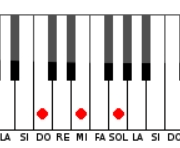
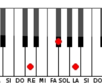
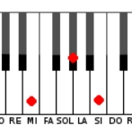
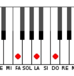
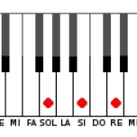
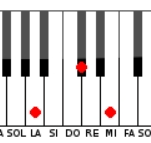
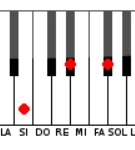

Do, Re, Mi, Fa, Sol, La, Si. La escala básica que todos aprenden puede ser tocada de izquierda a derecha utilizando sólo teclas blancas
Las teclas negras tienen el mismo nombre de la nota precedente, seguidas por el símbolo de sostenido (#) o de bemol (b). Dependiendo de la partitura que estés tocando, probablemente necesites utilizar sostenidos o bemoles. Haz clic en el botón correspondiente si es necesario.
DO MAYOR
RE MAYOR
MI MAYOR
FA MAYOR
SOL MAYOR
LA MAYOR
SI MAYOR
En el piano las siete notas están en orden, comenzando en la nota "DO" y finalizando en "SI", cuando llegamos a la última nota de la escala que cómo vimos antes es la nota "SI" comienza la escala nuevamente en la siguiente tecla la nota "DO" y se cierra un grupo de teclas al que se lo conoce popularmente con el nombre de octava. En los pianos generalmente hay 7 octavas, en los teclados estándar (no profesionales) hay 5 octavas.
Las teclas negras
Representan alteraciones de las teclas blancas, es decir
que al tocar una tecla negra, estamos tocando la misma nota
que la tecla blanca de abajo, pero con un sonido notoriamente distinto.
Teclas negras del piano: bemoles y sostenidos
Al añadir un bemol (b) a una nota, bajaremos su altura un semitono
(una tecla a la izquierda, ya sea negra o blanca, en el piano).
Por el contrario, un sostenido (#) subirá la altura de la nota un
semitono (la tecla adyacente hacia la derecha). Una sencilla regla mnemotécnica
puede ser B de bemol/bajar y S de sostenido/subir.